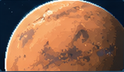

Main Campaign
Mission Debriefing

Mars Reconnaissance Orbiter
MRO • 2005
Interplanetary
Uncrewed
Earth-Mars
A mission to investigate the Red Planet in unprecedented detail.
01Mission Objectives
Your Assignment
Design and deploy a Mars-orbiting reconnaissance spacecraft to study the planet's surface, atmosphere and subsurface.
- Travel from Earth to Mars
- Enter a suitable orbit around Mars
- Collect high-resolution images and data
- Investigate evidence of water (including ice)
- Transmit data back to Earth
- Provide communication relay support
Balance scientific capability, mass, power and communication capacity.
02Historical Background
Before MRO, scientists knew water once flowed on Mars. MRO was designed to investigate where that water went, how long it persisted, and whether Mars could have supported life.

03Historical Impact
MRO provided detailed views of Mars, helped identify future landing sites, and acted as a communications relay for other missions.

04Mission Parameters
- Launch Date:
- 12 August 2005
- Arrival at Mars:
- 10 March 2006
- Launch Vehicle:
- Atlas V-401
- Power Source:
- Solar Arrays
- Launch Mass:
- 2,180 kg
- Destination:
- Mars